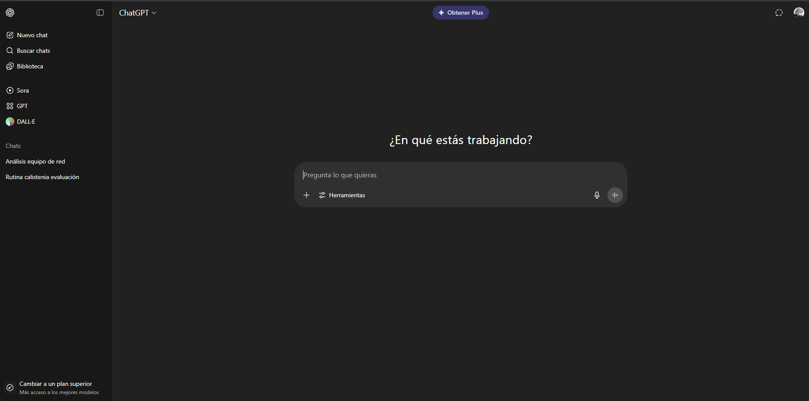

Usabilidad Web
¿Qué es la Usabilidad Web?
La usabilidad web es la facilidad con la que los usuarios pueden navegar y utilizar una página web para lograr sus objetivos de manera eficiente, efectiva y satisfactoria. Se centra en crear sitios intuitivos, accesibles y agradables para todos los visitantes.
Importancia de la Usabilidad Web
- Mejora la experiencia del usuario (UX): Hace que el uso del sitio sea agradable y cómodo, facilitando que las personas logren sus objetivos.
- Aumenta la satisfacción y confianza del visitante: Los usuarios satisfechos tienen una mejor percepción del sitio y es más probable que regresen o lo recomienden.
- Reduce errores y frustraciones: Un diseño usable minimiza los problemas y confusiones, evitando que los usuarios se equivoquen o se sientan frustrados.
- Incrementa el tiempo de permanencia y la conversión: Los usuarios permanecen más tiempo navegando en sitios fáciles de usar y es más probable que realicen acciones valiosas (compras, registros, etc.).
- Disminuye los costos de soporte y capacitación: Si el sitio es intuitivo, los usuarios requieren menos ayuda y es más fácil enseñarles a utilizarlo.
Principios de Jakob Nielsen
Visibilidad del estado del sistema
El sistema debe mantener siempre informados a los usuarios sobre lo que está ocurriendo, mediante una retroalimentación apropiada y en un tiempo razonable.
- Por ejemplo una notificación en un boton a la hora de pulsarlo indicando lo que pasa
Relación entre el sistema y el mundo real
El sistema debe hablar el idioma de los usuarios, con palabras, frases y conceptos familiares, siguiendo las convenciones del mundo real.
- Ejemplo: Uso del icono de una casa como referecia para ir al menu principal:

Control y libertad del usuario
Los usuarios suelen elegir funciones por error y necesitarán una manera de desahacer sus acciones sin tener que pasar por procesos extensos.
- Ejemplo: Los enlaces subrayados y en azul indican que son clicables, como en la mayoría de los sitios web. Recurso gráfico:
Prevención de errores
Mejor que buenos mensajes de error es un diseño cuidadoso que prevenga los problemas antes de que ocurran.
- Botón de “Enviar” desactivado hasta que todos los campos del formulario estén completos. Recurso gráfico:
Reconocer antes que recordar
Minimiza la carga de memoria del usuario mostrando objetos, acciones y opciones visibles. El usuario no debe recordar información de una parte a otra del diálogo.
- Ejemplo: Paginas visitadas anteriormente con un color morado enves de azul.
Flexibilidad y eficiencia de uso
Para los usuarios con experiencia usando navegadores o aplicaciones web se les tiene que dar opciones rapidas y atajos para que puedan realizar tareas de manera más eficiente.
- Ejemplo: En youtube puedes usar el espacio para que el video se pause y las flechas para subir y bajar el volumen, en vez de tener que usar el mouse para hacer estas acciones.
Diseño estético y minimalista
Los diálogos no deben contener información irrelevante o rara vez necesaria. Cada unidad extra de información compite con las unidades relevantes.
- Ejemplo: En las paginas actuales se busca el diseño minimalista sobre todo, mostrando solo la información necesaria y evitando el uso de colores estridentes o elementos innecesarios.

Ayudar a los usuarios a reconocer, diagnosticar y recuperarse de errores
Los mensajes de error deben expresarse en un lenguaje sencillo, indicar con precisión el problema y sugerir una solución constructiva.
- Ejemplo: Indicar al usuario que no ha escrito nada en la banjeda del formulario con una advertencia resaltarlo con un color
Ayuda y documentación
Aunque lo ideal es que el sistema se use sin documentación, puede ser necesario proporcionar ayuda y documentación fácil de buscar y centrada en la tarea del usuario.
- Ejemplo: Algunos de los recursos más utilizados para dar soporte a personas es mediante un Sección de Preguntas frecuentes (FAQs) o documentación aparte donde explique cada apartado de la pagina o aplicación
- Tambien se podria realizar con videos para personas que no entiendan tanto de tecnología, como por ejemplo un video de YouTube que explique como usar la pagina. En este video se explica como realizar un pago de servicios en la aplicación de BN movil